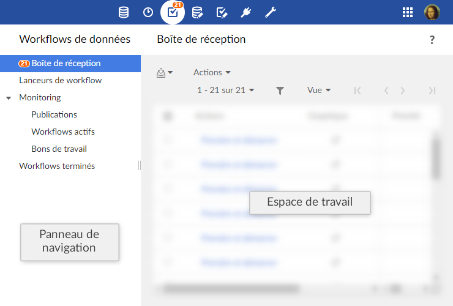
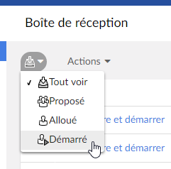

Utilisation de l'interface utilisateur de la section Workflow de données
Navigation dans l'interface utilisateur
La fonctionnalité workflows de données se trouve dans la section Workflows de données dans l'interface utilisateur de TIBCO EBX®.

Note
Seuls les utilisateurs autorisés peuvent accéder à cet écran via la 'Perspective avancée' ou via une perspective spécifique. Seuls les utilisateurs autorisés peuvent accéder à ces interfaces spécifiques.
Le panneau de navigation est composé de plusieurs items. Ces items sont visibles en fonction des permissions globales associées. Les différents items sont :
Boîte de réception des bons de travail | Tous les bons de travail qui vous sont alloués ou proposés, pour lesquels vous devez effectuer les actions spécifiées. |
Lanceurs de workflow | Liste des publications de workflow à partir desquelles vous pouvez lancer des workflows de données, en fonction de vos permissions. |
Monitoring | Vues pour le monitoring des workflows de données en cours pour lesquels vous avez les permissions nécessaires de visualisation. |
Publications | Publications pour lesquelles vous avez les permissions nécessaires de visualisation. Si vous disposez de permissions d'administration supplémentaires, vous pouvez également désactiver la possibilité de lancer les workflows de données depuis une publication à partir de cette vue. |
Workflows actifs | Workflows de données, en cours d'exécution, pour lesquels vous avez les permissions nécessaires de visualisation. Si vous disposez de permissions d'administration supplémentaires, vous pouvez également effectuer des actions d'administration à partir de cette vue, comme par exemple redémarrer une étape, ou terminer un workflow en cours. |
Bons de travail | Bons de travail pour lesquels vous avez les permissions nécessaires de visualisation. Si vous disposez de permissions d'administration supplémentaires, vous pouvez également effectuer des actions d'administration à partir de cette vue, comme par exemple allouer les bons de travail aux utilisateurs ou rôles. |
Workflows terminés | Workflows de données, dont l'exécution est terminée, pour lesquels vous avez les permissions nécessaires de visualisation. Si vous disposez de permissions d'administration supplémentaires, vous pouvez également nettoyer les workflows terminés à partir de cette vue. |
Note
Chaque section est accessible par composant web, par exemple pour intégration avec un portail, ou programmatiquement par la classe ServiceKey dans l'API Java.
Règles de navigation
Corbeille de bons de travail
Par défaut, une fois qu'un bon de travail est exécuté, la corbeille de bons de travail est affichée.
Ce comportement peut être modifié en fonction de la stratégie d'avancement de l'étape suivante. Cette stratégie permet d'enchaîner plusieurs étapes à la suite sans repasser par la corbeille de tâches.
Voir la stratégie d'avancement d'une étape de workflow dans la modélisation de workflow.
Lanceurs de workflow
Par défaut, une fois qu'un workflow est lancé, la table des lanceurs de workflow est affichée.
Ce comportement est modifiable dans la configuration du modèle : il est possible d'ouvrir directement la première étape sans afficher la table des lanceurs de workflow.
Voir l'ouverture automatique de la première étape d'un workflow dans la modélisation de workflow.
Vues personnalisées
Il est possible de définir des vues sur les différentes tables du workflow et de bénéficier de tous les mécanismes associés (dont la publication).
Les permissions pour créer et gérer les vues des tables de workflows sont les mêmes que les permissions des vues de tables de données. Il peut s'avérer nécessaire de modifier les permissions dans la section 'Administration' pour bénéficier de cette fonctionnalité, en sélectionnant Gestion des workflows > Workflows.
Voir les Vues pour plus d'informations.
Colonnes spécifiques
Par défaut, les colonnes spécifiques sont masquées dans les vues qui peuvent en bénéficier (corbeille, monitoring des bons de travail, monitoring des workflows actifs et workflows terminés).
Il faut créer une vue personnalisée et l'appliquer pour afficher les colonnes spécifiques souhaitées. Pour chaque bon de travail ou workflow, la correspondance définie dans le modèle de workflow associé est alors appliquée. Si une expression est définie pour une colonne et contient des variables du contexte de données, ces variables sont évaluées lors de son affichage. Si une expression contient des expressions natives qui dépendent de la locale, l'expression est évaluée dans la locale par défaut.
Filtrage d'items dans les vues
Dans certaines vues, comme la 'Boîte de réception' des bons de travail, vous pouvez filtrer les lignes affichées dans les tables en fonction de leur état. Dans ces vues, un menu est disponible à cet effet pour sélectionner l'état correspondant au filtre attendu.

Vue graphique d'un workflow de données
En tant qu'utilisateur avec un bon de travail à effectuer, ou en tant que superviseur ou administrateur de workflow de données, vous pouvez suivre l'avancement ou l'historique d'exécution d'un workflow de données. Pour cela, cliquer sur le bouton 'Afficher'  dans la colonne 'Workflow de données' des tables de l'interface de workflows de données. Ce bouton ouvre une pop-up qui affiche une vue interactive graphique de l'exécution du workflow de données. Dans cette vue, vous pouvez suivre l'avancement global de l'exécution, et sélectionner une étape individuelle afin de consulter le détail de ses informations.
dans la colonne 'Workflow de données' des tables de l'interface de workflows de données. Ce bouton ouvre une pop-up qui affiche une vue interactive graphique de l'exécution du workflow de données. Dans cette vue, vous pouvez suivre l'avancement global de l'exécution, et sélectionner une étape individuelle afin de consulter le détail de ses informations.
Si des étapes ont été définies comme masquées dans la modélisation de workflow, elles sont automatiquement masquées dans la vue graphique de workflow pour les utilisateurs non-administrateurs (non-administrateurs built-in et non-administrateurs de workflow). Un bouton est disponible pour afficher les étapes masquées. Le choix des utilisateurs (montrer ou masquer les étapes) est sauvegardé par utilisateur, par publication, pendant la session utilisateur.
Pour les tâches utilisateur dans le nouveau mode (un seul bon de travail), les informations principales à propos du bon de travail unique sont directement affichées dans la vue graphique de workflow, si elles sont disponibles : l'avatar de l'utilisateur associé au bon de travail et la décison qui a été prise pour le bon de travail (accepté ou rejeté).
 Sommaire du guide utilisateur
Sommaire du guide utilisateur